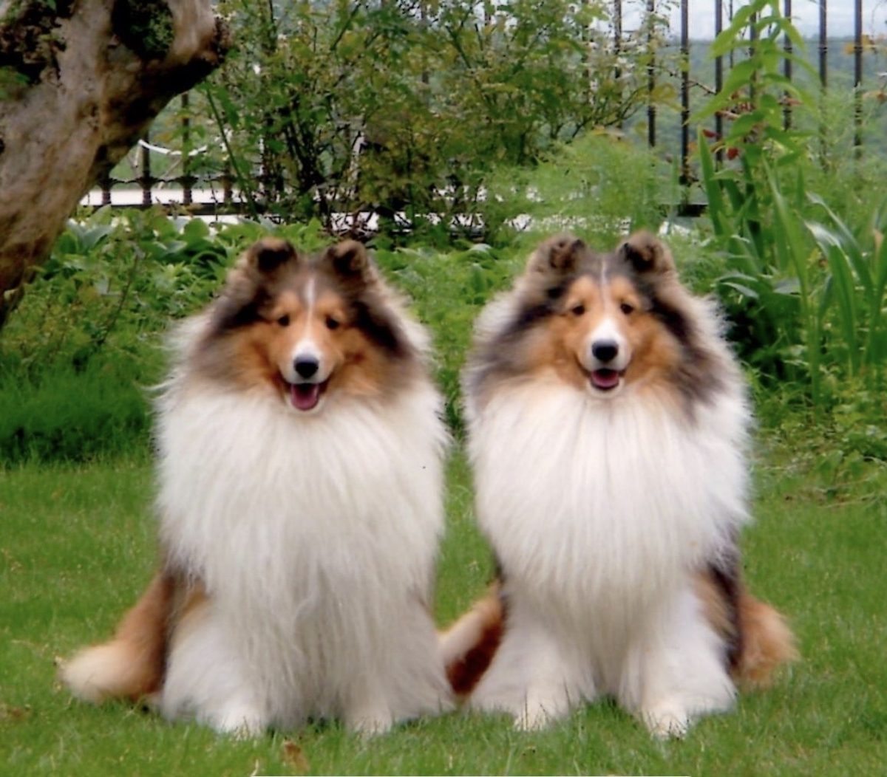

シェットランド・シープドッグを迎えた方へ
犬の健康・飼育ガイド
迎えた日の準備から、社会化、体重、予防、もしものときの受診まで。16の章それぞれに、何をすればよいかと、その根拠がどこまで確かかを並べて示しています。

迷ったときの基本
何の病気かを言い当てようとせず、「いつ診てもらうか」だけを決めてください。判断に迷ったら、様子を見る前に、かかりつけの動物病院へ電話してください。
11章「受診の目安」推奨1 受診の目安まとめを開く
推奨の読み方
どの章も、推奨度と、2つの見方に分けた確かさをセットで示しています。全44件の推奨は推奨の一覧でまとめて見られます。
推奨度
強く推奨する多くの犬で、行うことを勧めます。
提案する状況によって選び方が変わります。
推奨度は研究の量だけでなく、害の小ささと必要性も合わせて決めています。そのため、確かさが低くても「強く推奨する」ことがあります。
確かさの2つの見方
良い方向に働くことの確かさは、その行動が良い方向に働くことがどこまで確かか。シェルティでどれだけ役立つかの確かさは、シェルティでどれだけ役立つかがどこまで確かめられているかです。
「非常に低」の意味
シェルティでどれだけ役立つかの確かさが「非常に低」は、効果が小さいという意味ではなく、どの程度役立つかをシェルティで確かめられていないという意味です。
研究ではなく実務上の工夫に基づく部分には、これは経験則ですと明記しています。
章の一覧
どの章から読んでも分かるように書かれています。章の最後の「根拠」を開くと、研究の中身と限界を読めます。「1-1」「1-2」のような枝番は、もとは1つの章だった内容を2つに分けたことを示します。本文中の「4-1章」「11章」などは、この番号を指しています。
育てる2-1・2-2・3
健康管理4-1・4-2・5・6
関連サイト
上野山シェルティ — シェルティの繁殖・ショーなどを紹介するサイトです。本ガイドとは独立して運営しています。